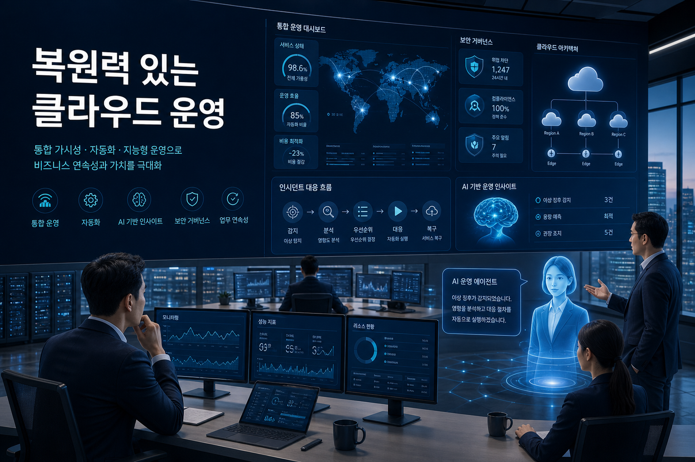
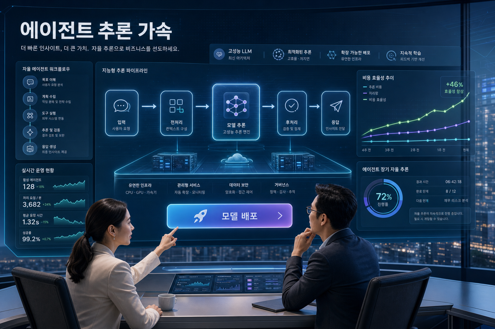
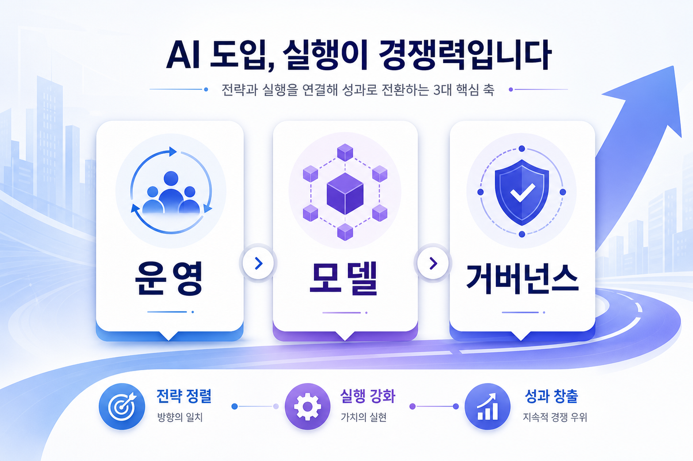

아마존웹서비스 코리아 기술 블로그
통합 운영으로 핵심 워크로드의 복원력 강화
핵심 업무를 클라우드에서 운영하는 조직은 고가용성, 빠른 장애 대응, 마이그레이션 가속을 동시에 요구받고 있습니다. 이번 글은 통합 운영 체계를 통해 관측 가능성, 지원, 인시던트 대응을 더 일관된 운영 모델로 묶어야 한다는 신호로 해석됩니다.
신규 수집 문서 2건을 기준으로 작성했습니다. 오늘의 핵심은 클라우드 운영 체계의 회복탄력성과 장기 실행 인공지능 에이전트의 추론 비용·성능 관리가 동시에 중요해지고 있다는 점입니다.

핵심 업무를 클라우드에서 운영하는 조직은 고가용성, 빠른 장애 대응, 마이그레이션 가속을 동시에 요구받고 있습니다. 이번 글은 통합 운영 체계를 통해 관측 가능성, 지원, 인시던트 대응을 더 일관된 운영 모델로 묶어야 한다는 신호로 해석됩니다.
장기 실행 자율 에이전트의 추론과 오케스트레이션을 겨냥한 개방형 모델을 관리형 배포 경험으로 제공한다는 점이 핵심입니다. 기업은 실험 속도뿐 아니라 추론 비용, 모델 승인, 운영 로그, 도구 호출 통제까지 함께 설계해야 합니다.
아마존웹서비스 통합 운영 흐름은 장애 대응, 관측 가능성, 지원 체계를 한 묶음으로 재정의합니다. 대규모 핵심 워크로드에서는 개별 도구 도입보다 운영 책임, 대응 절차, 지표 체계를 먼저 표준화해야 합니다.
엔비디아 네모트론 3 울트라의 세이지메이커 점프스타트 제공은 자율 에이전트형 추론을 빠르게 실험할 수 있게 합니다. 다만 에이전트가 오래 실행될수록 호출량, 토큰 비용, 도구 호출 실패가 운영 비용으로 전환됩니다.
클라우드 운영 로그, 모델 호출 기록, 사용자 승인 흐름이 분리되면 사고 조사와 비용 설명이 어려워집니다. 초기 설계부터 추적성, 권한, 예산 경보, 예외 승인 기준을 결합해야 합니다.

| 변화 신호 | 기업 영향 | 우선 확인 항목 |
|---|---|---|
| 통합 운영과 관측 가능성 강화 | 장애 복구 시간이 경영 지표와 직접 연결됩니다. | 핵심 업무별 복구 목표, 알림 체계, 책임자 지정 |
| 세이지메이커 점프스타트 기반 모델 배포 | 모델 실험 속도는 빨라지지만 승인·비용 통제가 더 중요해집니다. | 모델 승인 기준, 배포 환경 분리, 비용 상한 |
| 장기 실행 에이전트 추론 | 단발성 챗봇보다 운영 로그와 도구 호출 관리가 중요합니다. | 도구 호출 권한, 실패 재시도, 감사 로그 |
감사 가능성과 권한 분리를 먼저 설계하고, 모델 성능보다 운영 통제 문서를 먼저 준비해야 합니다.
현장 시스템과 연결되는 에이전트는 장애 시 우회 절차와 사람 승인 단계를 반드시 포함해야 합니다.
공통 운영 대시보드, 비용 태깅, 모델 카탈로그, 표준 배포 템플릿을 함께 제공해야 현업 확산 속도가 납니다.

장기 실행 에이전트는 호출 수가 누적되므로 예산 경보, 요청당 비용 추적, 실험 계정 분리가 필요합니다.
에이전트가 운영 도구를 호출한다면 최소 권한, 승인 흐름, 비상 차단 절차가 반드시 필요합니다.
모델팀, 플랫폼팀, 보안팀, 현업의 역할 경계를 문서화하지 않으면 장애와 품질 이슈가 반복됩니다.
이번 실행에서 저장한 지식형 마크다운 파일은 다음과 같습니다.
이미지 프롬프트 상세 기록은 image-prompts.md에 보존했습니다.